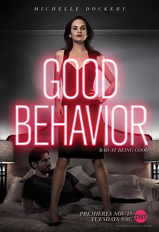

一善之差 第一季 / Good Behavior Season 1
又名：善举 / 危险善举
说不上哪里好看，莫名其妙的有意思。但是应该不会续订吧
作品信息
| 导演 | 马格努斯·马滕斯 / 米凯尔·诺加德 / 马克·匹兹纳斯基 / 菲尔·亚伯拉罕 / 夏洛特·西林 / 卡尔·弗兰克林 / 乔纳斯·佩特 |
| 编剧 | 查德·霍奇 / 布莱克·克劳奇 |
| 主演 | 米歇尔·道克瑞 / 胡安·迭戈·博托 / 卢西亚·斯杜斯 / 特里·金尼 / 乔伊·科恩 / 吉迪恩·埃默里 / 鲍比·巴特森 / 玛丽亚·博托 / 小托马斯·布莱克 |
| 类型 | 剧情 / 动作 / 犯罪 |
| 制片国家/地区 | 美国 |
| 语言 | 英语 |
| 首播 | 2016-11-15(美国) |
| 季数 | 1 |
| 集数 | 10 |
| 单集片长 | 50分钟 |
| IMDb | tt4855114 |
最后一次看到是 2026-08-12T21:12:18+08:00 · 豆瓣原页